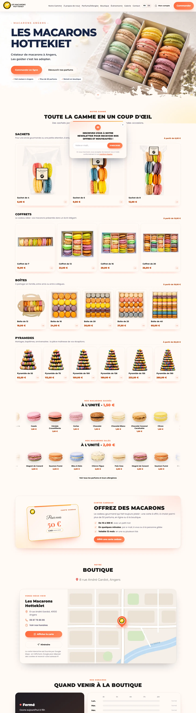

Les Macarons Hottekiet
Stagiaire, puis développeur web full-stack
Contexte
Les Macarons Hottekiet est un créateur de macarons installé à Angers, avec plus de cinquante parfums. L'entreprise avait besoin d'un site pour présenter sa gamme et permettre de commander en ligne, avec retrait en boutique.
Ma démarche
-
1
Observer Stage sur site · janv. – févr. 2024
Avant d'écrire une ligne de code, j'ai passé deux mois dans l'entreprise : étude des processus de vente et de confection des macarons, participation à la gestion des stocks et aux tâches administratives, présence au salon gastronomique de Biarritz. L'objectif : analyser les besoins réels pour le futur site.
-
2
Concevoir et développer CDD à distance · févr. – oct. 2024
- Tunnel de commande Click & Collect sur mesure, avec calendrier interactif
- Back-office : statistiques de ventes, produits et stocks, horaires et créneaux, codes promotionnels, événements
- Espace client sécurisé et espace administrateur
- Factures, tickets de paiement Stripe et e-mails de confirmation générés automatiquement
- Chatbot d'assistance, site multilingue, newsletter et optimisation SEO
-
3
Déployer et sécuriser
- Déploiement et administration du serveur sous Linux
- API REST entre le front-end et le back-end (Node.js, MySQL)
- Authentification par JWT avec cookies HttpOnly / Secure, HTTPS
- Conformité RGPD et gestion du consentement aux cookies
Résultat
Le site est toujours en production et continue d'évoluer. Mesures PageSpeed Insights sur mobile (novembre 2026) :
- 93 Performance page d'accueil
- 97 Accessibilité
- 100 Référencement SEO
Compétences développées
Techniques · métier
- Développement full-stack
- HTML · CSS · JavaScript
- Node.js
- Conception de base MySQL
- Paiement Stripe
- Administration Linux
- Sécurité web (JWT, HTTPS)
- SEO
Transversales
- Analyse du besoin sur le terrain
- Gestion de projet de bout en bout
- Autonomie à distance
- Dialogue avec un client non technicien
- Conformité RGPD
Mon analyse
Le stage d'observation a été décisif : avoir vu de près la confection, la vente et la gestion des stocks m'a permis de concevoir un outil qui épouse le métier — créneaux de retrait, stock par parfum — plutôt qu'un site générique.
C'est aussi mon premier projet mené seul de bout en bout. J'y ai appris à découper un besoin, à faire des choix techniques et à les assumer en production. Manipuler des paiements et des données clients m'a confronté concrètement aux enjeux de sécurité et de protection des données : c'est ce qui nourrit aujourd'hui mon projet de spécialisation en cybersécurité.